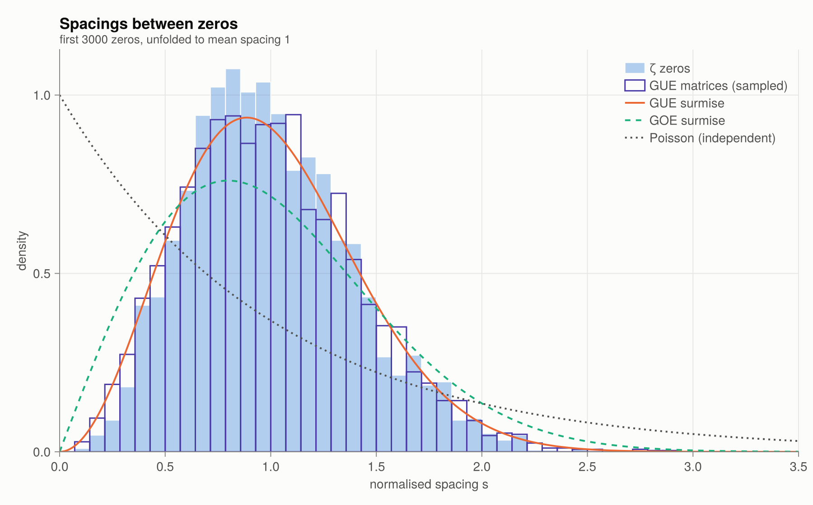
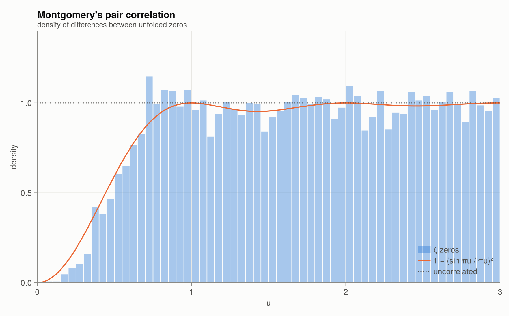

7 · Random matrices
Unfolding
The zeros get denser with height: the mean gap near height $t$ is $2\pi/\log(t/2\pi)$. To compare gaps at different heights, unfold them with the smooth counting function:
\[u_n = \frac{\theta(\gamma_n)}{\pi} + 1 \approx N(\gamma_n),\]
so that the $u_n$ have mean spacing 1.
γ = nontrivial_zeros(3000)
δ = normalized_spacings(γ)
sum(δ) / length(δ), minimum(δ), maximum(δ)(0.9999747419785644, 0.08925291410537284, 2.4679062127584075)Spacing distribution
If zeros were independent random points (a Poisson process), the gaps would follow $e^{-s}$, and tiny gaps would be the most common. Instead the zeros repel. Their gaps follow the distribution of eigenvalue spacings of large random Hermitian matrices, the Gaussian Unitary Ensemble (GUE). The Wigner surmise approximates that distribution well:
\[p_{\text{GUE}}(s) = \frac{32}{\pi^2}\, s^2\, e^{-4s^2/\pi}, \qquad p_{\text{GOE}}(s) = \frac{\pi}{2}\, s\, e^{-\pi s^2/4}.\]
The $s^2$ behaviour near zero (quadratic repulsion) is the signature of unitary symmetry.
plot_spacing_distribution()
The outlined histogram comes from actual GUE matrices (gue_spacings), unfolded with the Wigner semicircle law.
Montgomery's pair correlation
Montgomery (1973), assuming RH, studied the density of all differences $u_m - u_n$, not just neighbouring ones. For test functions with restricted Fourier support he showed that this density is
\[1 - \left(\frac{\sin \pi u}{\pi u}\right)^2 .\]
At tea in Princeton, Freeman Dyson recognised this as the pair-correlation function of GUE eigenvalues. Odlyzko's computations of zeros near the $10^{20}$-th confirmed the agreement with remarkable precision.
plot_pair_correlation()
Why it matters: the Hilbert–Pólya idea
If the $\gamma_n$ were the eigenvalues of a self-adjoint operator, they would be real, and RH would follow. The GUE statistics hint that such an operator should break time-reversal symmetry. Berry and Keating suggested a quantisation of the classical Hamiltonian $H = xp$. No such operator has been found.
The random-matrix model also makes precise predictions about moments of $|\zeta(\tfrac12+it)|$ (Keating–Snaith) and about low-lying zeros of families of L-functions (Katz–Sarnak).
Functions in this chapter
unfold, normalized_spacings, wigner_gue, wigner_goe, poisson_spacing, montgomery_pair_correlation, pair_correlation, gue_eigenvalues, gue_spacings, close_pairs.